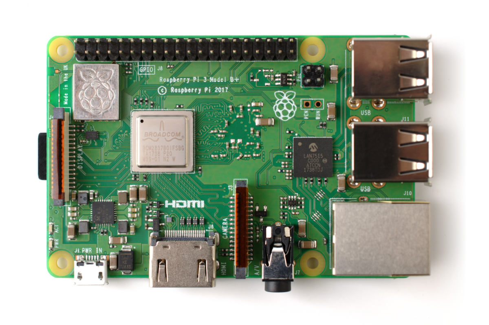

Our Raspberry Pi is the core of everything. The role of web server for our web application and circuit master is performed by it.

The role of Arduino Uno, with Adafruit Motorshield V2 upon it, is to control Steppers Motor installed. Acting as a Slave of entire circuit, his scope is to perform the requests made by Raspberry Pi
Thanks to user's FitBit Charge HR and other Sensors placed along the path, the system is able to adapt the obstacles and give a better running experience


With our stepper motors we are able to move obstacles and adapt them to you